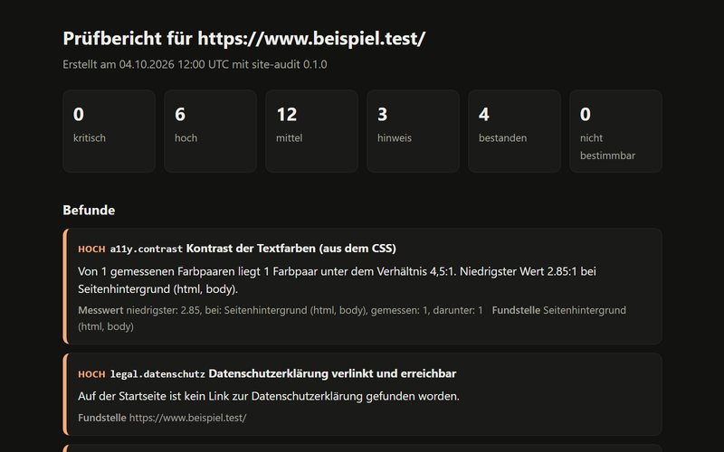

Software — 2026
site-audit
Ein Kommandozeilenwerkzeug, das die Startseite einer Website auf Technik- und Pflichtmängel prüft und einen Bericht schreibt. Jeder Befund hat Messwert und Fundstelle.

Bericht über eine Testseite mit absichtlich eingebauten Mängeln.
Überblick
site-audit ruft eine Seite ab und führt 25 Prüfungen aus: Zertifikat und Weiterleitung, Impressum und Datenschutzerklärung, Verbindungen zu fremden Domains, Alternativtexte, Überschriften, Kontrast, Gewicht und Sicherheits-Header. Der Bericht kommt als Konsolenansicht, Markdown, HTML oder JSON.
Die Aufgabe
Eine Website im Browser Punkt für Punkt auf Mängel zu prüfen, dauert pro Betrieb etwa eine halbe Stunde. Was dabei übersehen wird, bemerkt später der Kunde oder ein Dritter.
Der Ansatz
Jeder Befund trägt einen Messwert und eine Fundstelle, und was nur geschätzt ist, steht als Schätzung im Bericht. Das Werkzeug verhält sich wie ein höflicher Besucher: Es liest die robots.txt, fragt höchstens einmal pro Sekunde und lädt fremde Ressourcen nicht nach.
Das System
Python mit httpx, BeautifulSoup und lxml. Jede Prüfung ist eine Funktion mit Dekorator und meldet sich selbst an. Wirft sie einen Fehler, wird daraus ein Befund „nicht bestimmbar“ und der Lauf geht weiter. Ein kleiner CSS-Leser rechnet Kontraste, die Netzschicht ist austauschbar, damit die Tests ohne Netz laufen.
Das Ergebnis
96 automatische Tests ohne Netzwerkzugriff. Zwei Testseiten halten das Verhalten fest: Die gute löst keinen Befund aus, die kaputte genau die 16 erwarteten. Der erste Lauf gegen das eigene Portfolio zeigte zwei Fehlalarme bei Kontrast und Überlauf; beide Prüfungen sind danach enger gefasst worden.